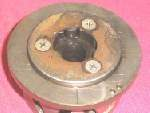

The starter clutch is a one-way clutch fixed to the back of the flywheel, under the left engine cover. It has rollers or sprags (small wedges) that grip a large starter gear. The starter motor drives this gear through an idler gear.
What it does
When the starter turns, the rollers lock and the starter gear drives the flywheel and crank. Once the engine fires and runs faster than the starter, the rollers release so the engine does not spin the starter. Springs and rollers wear, the gear face pits, and old or wrong oil makes the rollers stick or slip. MAVCC names it as the most common cause of a starter that spins without turning the engine.
Signs it is worn or failing
- Starter motor whirs but the engine does not turn.
- Grinding or screeching noise when starting.
- Starter turns the engine only sometimes, often worse when cold.
- Whine from the left side cover while riding if it does not release.
When to replace it
When rollers or sprags are worn or broken, springs are weak, or the starter gear face is pitted. Replace rollers, springs and gear together if worn. Follow your bike's manual.
What to match when buying
- Match engine code: number of rollers, bolt pattern and starter gear teeth.
- Kits may include rollers, springs and caps only, or the full housing. Check what is in the box.
- Check the gear hub surface on the new part; it must be smooth and hard.
Fitting notes
- Workshop job: Check the starter clutch. The flywheel must come off with a puller.
- Fit it the right way round; reversed, it locks the wrong way.
- Use thread locker on the bolts if the manual says so and tighten to the manual torque.
Reference (K-Light 125)
| Item | Value | PDF page |
|---|---|---|
| One-way clutch mounting bolt | 95 N·m | 73 |
| Starter clutch cover bolt | 12 N·m | 73 |